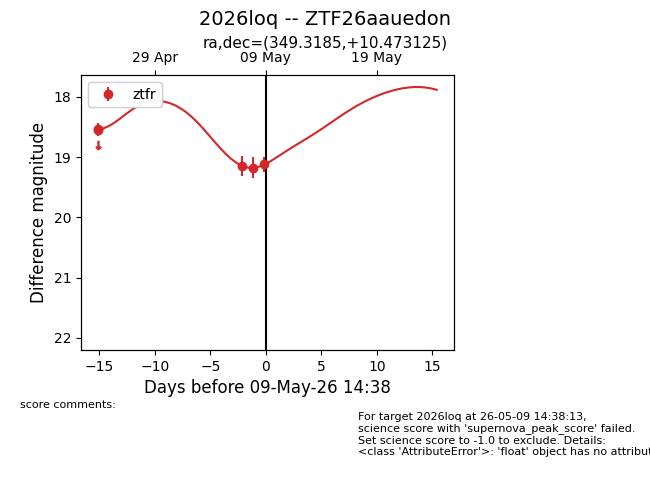
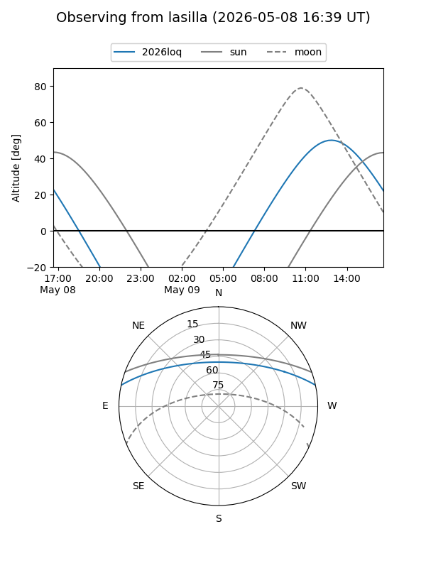
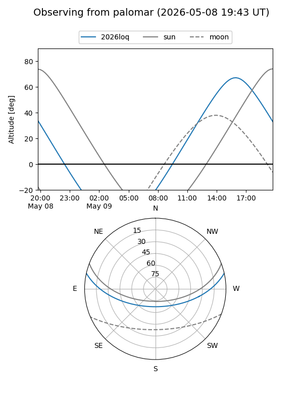
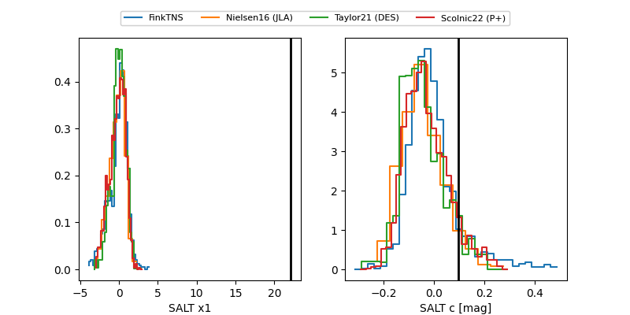

2026loq
Target 2026loq at 2026-05-09 14:39
Aliases and brokers:
FINK: link
Lasair: link
ALeRCE: link
TNS: link
YSE: link
alt names
ZTF26aauedon (ztf,fink_ztf)
2026loq (tns,yse)
Coordinates:
equatorial (ra, dec) = 349.3185,+10.47313
equatorial (HMS+DMS) = 23:17:16.43,+10:28:23.25
galactic (l, b) = (88.4969,-46.00819)
Flags:
Photometry:
last ztfr=19.12
5 ztfr detections
Lightcurve

Visibility


Additional plots
